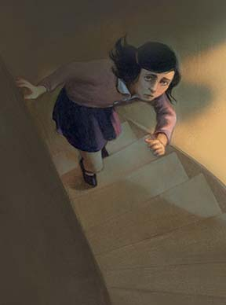

Quote or image description can go here
But he was scheming, Hitler, and he was full of hate. His plans grew more ambitious and daring, he wanted more towns and countries under his control and he wanted to drive the Frank family and other Jewish families like theirs into the sea. Whilst people and families went about their daily business he planned to attack all the countries in the land, including where the Frank family now lived. He planned terrible, terrible things. But no one could see what was coming. The coiled spring of war was winding tighter still, waiting to release its horrors onto the world.
5